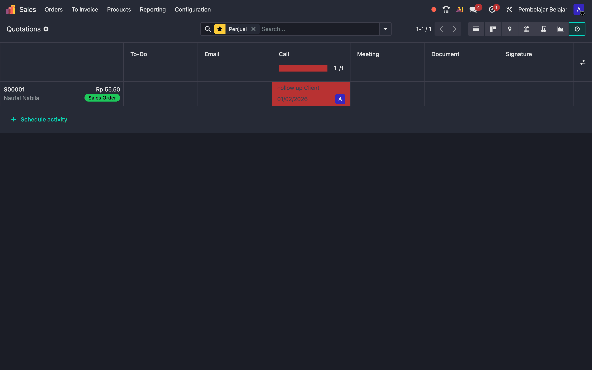

Odoo memiliki berbagai cara untuk menampilkan data yang sama. Tombol navigasi ini berada di pojok kanan atas.
A. List View (Daftar)
Tampilan tabel standar. Cocok untuk melihat detail banyak data sekaligus.
 📸 Screenshot: Tampilan List View (Tabel)
📸 Screenshot: Tampilan List View (Tabel)
B. Kanban View (Kartu)
Tampilan visual berbasis kartu. Anda bisa melakukan Drag & Drop untuk memindahkan status dokumen.
 📸 Screenshot: Tampilan Kanban (Kartu-kartu)
📸 Screenshot: Tampilan Kanban (Kartu-kartu)
C. Calendar View
Melihat jadwal dokumen berdasarkan tanggal (misal: Tanggal Order atau Deadline).
 📸 Screenshot: Tampilan Kalender
📸 Screenshot: Tampilan Kalender
D. Pivot View
Tabel analisis data (seperti Pivot Table di Excel) untuk membuat laporan ringkasan dengan cepat.
 📸 Screenshot: Tampilan Pivot Table
📸 Screenshot: Tampilan Pivot Table
E. Graph View
Visualisasi data dalam bentuk grafik (Bar Chart, Line Chart, atau Pie Chart).
 📸 Screenshot: Tampilan Grafik (Bar/Pie Chart)
📸 Screenshot: Tampilan Grafik (Bar/Pie Chart)
F. Activity View (Aktivitas)
Melihat jadwal tugas (To-Do, Email, Call) yang terkait dengan dokumen.
🔴 Merah: Terlambat (Overdue)
🟢 Hijau: Akan datang (Future)
🟡 Kuning: Hari ini (Today)

📸 Screenshot: Tampilan Activity (Grid dengan warna status)
G. Map View (Peta)
Menampilkan lokasi alamat partner atau transaksi dalam peta interaktif (Google Maps/OpenStreetMap).
 📸 Screenshot: Tampilan Peta dengan pin lokasi
📸 Screenshot: Tampilan Peta dengan pin lokasi
 📸 Screenshot: Menu dropdown Filter di aplikasi Sales
📸 Screenshot: Menu dropdown Filter di aplikasi Sales